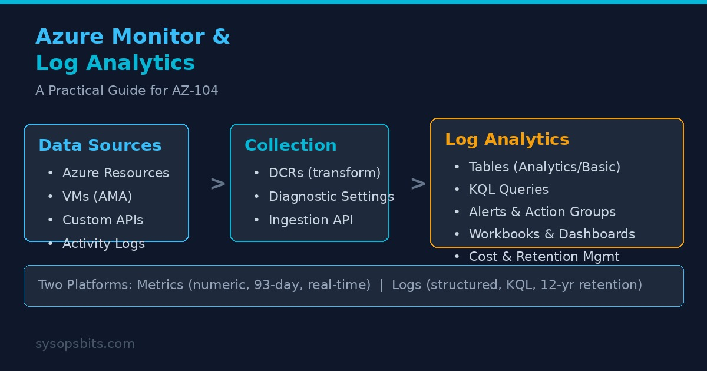

Azure Monitor and Log Analytics: A Practical Guide for AZ-104

Monitoring is not optional in Azure. Every VM, database, and application generates telemetry, and you need a unified system to collect, query, and act on it. Azure Monitor is that system. Log Analytics is its data store.
This guide covers the practical setup, querying, and alerting patterns that AZ-104 expects you to know for Domain 5 (Monitoring).
Azure Monitor Overview
Azure Monitor collects, analyzes, and responds to telemetry from Azure resources, on-premises infrastructure, and third-party services. It has two data platforms:
- Metrics - Numeric time-series data (CPU percentage, disk IOPS, HTTP 4xx count). Stored for 93 days by default. Supports near-real-time alerting at 1-minute granularity.
- Logs - All other telemetry including application traces, audit events, performance counters, and custom data. Stored in a Log Analytics workspace. Retention is configurable from 30 days to 730 days for interactive retention, plus up to 12 years for long-term retention.
Log Analytics Workspace
A Log Analytics workspace is a container for log data. Every Azure subscription can have multiple workspaces. The workspace is both a storage boundary and a security boundary - cross-workspace queries are possible but require explicit configuration.
Creating a Workspace
# Create a Log Analytics workspace with PowerShell
$workspace = @{
Name = "la-prod-eastus-001"
ResourceGroupName = "rg-monitoring"
Location = "EastUS"
Sku = "PerGB2018"
RetentionInDays = 365
}
New-AzOperationalInsightsWorkspace @workspace
# Create with Azure CLI
az monitor log-analytics workspace create \
--resource-group rg-monitoring \
--workspace-name la-prod-eastus-001 \
--location eastus \
--sku PerGB2018 \
--retention-time 365Table Plans and Retention
Log Analytics tables support two plans. The plan determines the cost structure and available features.
- Analytics (default) - Full KQL query capability, near real-time ingestion, interactive retention up to 730 days. You pay for data ingested.
- Basic - Lower ingestion cost, lower query frequency, 30-day interactive retention. Best for verbose debug logs that you rarely query.
After interactive retention expires, you can configure long-term retention up to 12 years. Data moves to a low-cost archive tier with 30-day restoration windows.
Data Collection
There are three main paths for getting data into Log Analytics. AZ-104 expects you to know when to use each.
1. Diagnostic Settings
Diagnostic settings capture platform logs and metrics from Azure resources. They are configured per-resource and can stream to Log Analytics, Storage Account, Event Hubs, or a partner integration.
# Enable diagnostic settings for a VM
$settings = @{
Name = "vm-diagnostics-to-la"
ResourceId = (Get-AzVM -Name web01 -ResourceGroupName rg-prod).Id
WorkspaceId = (Get-AzOperationalInsightsWorkspace -Name la-prod-eastus-001).ResourceId
Enabled = $true
}
Set-AzDiagnosticSetting @settings
# Azure CLI equivalent
az monitor diagnostic-settings create \
--name "vm-diagnostics-to-la" \
--resource "/subscriptions/.../resourceGroups/rg-prod/providers/Microsoft.Compute/virtualMachines/web01" \
--workspace "la-prod-eastus-001" \
--logs '[{"category":"Administrative","enabled":true}]' \
--metrics '[{"category":"AllMetrics","enabled":true}]'2. Azure Monitor Agent (AMA)
The Azure Monitor Agent collects OS-level logs and performance counters from VMs. It replaces the legacy Log Analytics Agent (MMA/OMS). The AMA uses Data Collection Rules (DCRs) to define what to collect and where to send it.
# Create a DCR for collecting Windows event logs
$dcrBody = @"
{
"properties": {
"dataSources": {
"performanceCounters": [
{
"name": "perfCounter1",
"streams": ["Microsoft-Perf"],
"samplingFrequencyInSeconds": 60,
"counterSpecifiers": [
"\\Processor(_Total)\\% Processor Time",
"\\Memory\\Available MBytes",
"\\LogicalDisk(_Total)\\% Free Space"
]
}
],
"windowsEventLogs": [
{
"name": "eventLogs1",
"streams": ["Microsoft-Event"],
"xPathQueries": [
"System!*[System[(Level=1 or Level=2 or Level=3)]]",
"Application!*[System[(Level=1 or Level=2 or Level=3)]]"
]
}
]
},
"destinations": {
"logAnalytics": [
{
"workspaceResourceId": "/subscriptions/.../resourcegroups/rg-monitoring/providers/microsoft.operationalinsights/workspaces/la-prod-eastus-001",
"name": "la-destination"
}
]
},
"dataFlows": [
{
"streams": ["Microsoft-Perf", "Microsoft-Event"],
"destinations": ["la-destination"]
}
]
}
}
"@
$dcrBody | Out-File dcr-win-vms.json
New-AzDataCollectionRule `
-ResourceGroupName rg-monitoring `
-Name "dcr-windows-vms" `
-Location eastus `
-RuleFile dcr-win-vms.json3. Logs Ingestion API
For custom or third-party data, use the Logs Ingestion API. You create a DCR with a JSON schema, then send data over HTTPS with Azure AD authentication. This supports custom tables and custom JSON payloads.
Kusto Query Language (KQL)
KQL is the query language for Log Analytics. AZ-104 expects you to read and interpret basic KQL queries, not write complex ones. These patterns cover the scenarios you will see.
Basic Queries
// Get the last 100 errors from a specific VM
Event
| where Computer == "web01.contoso.com"
| where EventLevelName == "Error"
| project TimeGenerated, Computer, EventID, Message
| take 100
// Show CPU usage trends for all VMs over the last hour
Perf
| where CounterName == "% Processor Time"
| where TimeGenerated > ago(1h)
| summarize avg(CounterValue) by Computer, bin(TimeGenerated, 5m)
| render timechart
// Count failed logon attempts per user
SecurityEvent
| where EventID == 4625
| where TimeGenerated > ago(24h)
| summarize FailedLogons = count() by TargetUserName
| top 10 by FailedLogons desc
// Billable data by table
Usage
| where TimeGenerated > ago(24h)
| where IsBillable == true
| summarize BillableGB = sum(Quantity) by DataType
| sort by BillableGB descCreating Alert Rules from Queries
// Alert when billable data exceeds 50 GB in 24 hours
Usage
| where TimeGenerated > ago(24h)
| where IsBillable == true
| summarize TotalBillableGB = sum(Quantity)
| where TotalBillableGB > 50Alerts and Action Groups
An alert rule monitors a data source (metric or log query) and fires when conditions are met. When an alert fires, it triggers one or more action groups.
Action Groups
An action group defines how to notify operators and whether to run automated responses. Each action group can include multiple action types:
- Email/SMS/Push/Voice - Direct notifications. Up to 10 email addresses, 10 SMS numbers.
- Webhook - HTTP POST to a URL. Supports secure webhooks with Azure AD authentication.
- ITSM Connector - Creates incidents in ServiceNow, Cherwell, or other ITSM systems.
- Automation Runbook - Runs an Azure Automation runbook to auto-remediate.
- Azure Function - Invokes a serverless function.
- Logic App - Triggers a workflow with conditional logic.
- Event Hubs - Streams the alert to a SIEM or custom integration.
# Create an action group with email and webhook
$actionGroup = @{
Name = "ag-oncall-prod"
ResourceGroupName = "rg-monitoring"
ShortName = "oncall-prod"
EmailReceiver = @(
@{
Name = "oncall-email"
EmailAddress = "oncall@contoso.com"
}
)
WebhookReceiver = @(
@{
Name = "pagerduty-webhook"
ServiceUri = "https://events.pagerduty.com/integration/..."
UseCommonAlertSchema = $true
}
)
}
New-AzActionGroup @actionGroup
# Create a log search alert
$alert = @{
Name = "alert-high-cpu"
ResourceGroupName = "rg-monitoring"
ActionGroupId = (Get-AzActionGroup -Name "ag-oncall-prod").Id
Condition = @{
Query = "Perf | where CounterName == '% Processor Time' | where CounterValue > 90"
TimeGranularity = "PT5M"
Frequency = "PT5M"
Threshold = 5
}
Description = "Alert when CPU > 90% for 5 consecutive minutes"
Enabled = $true
}
New-AzScheduledQueryRule @alertWorkbooks and Dashboards
Azure Monitor Workbooks are interactive reports built on KQL queries. They combine text, charts, grids, and parameters into reusable monitoring templates. Common use cases include:
- VM performance overview with selectable time ranges
- Failed request analysis across application components
- Cost and usage breakdown by workspace
- Availability reports with SLA calculations
Workbooks can be pinned to Azure dashboards and shared across teams. You can also export them as ARM templates for version control.
Cost Management
Log Analytics costs come from two sources: data ingestion and data retention. Pay-as-you-go pricing is approximately $2.76 per GB ingested for Analytics tables, with lower rates for Basic tables.
Controlling Costs
- Set a daily cap - Stops data collection when the cap is reached. Does not retroactively delete data. Use this as a safety net, not a budget tool.
- Use Basic tables - Route high-volume debug logs to Basic tables instead of Analytics tables.
- Workspace transformations - Filter out unwanted data at ingestion time using a KQL transformation. This is the most powerful cost control because you never store data you do not need.
- Set appropriate retention - Most compliance requirements are 90-365 days. Do not use 730-day retention for high-volume tables unless required.
# Set daily cap for a workspace
$workspace = Get-AzOperationalInsightsWorkspace `
-Name la-prod-eastus-001 `
-ResourceGroupName rg-monitoring
$workspace | Set-AzOperationalInsightsWorkspace `
-DailyQuotaGb 10
# Check current usage
Usage
| where TimeGenerated > ago(24h)
| where IsBillable == true
| summarize BillableGB = sum(Quantity) by DataType
| sort by BillableGB desc
# Azure CLI equivalent for daily cap
az monitor log-analytics workspace update \
--resource-group rg-monitoring \
--workspace-name la-prod-eastus-001 \
--daily-quota-gb 10How AZ-104 Tests Monitoring
Domain 5 (Monitoring) of the AZ-104 exam covers Azure Monitor through multiple question types:
- "You need to collect performance data from 50 VMs. What should you use?" - Azure Monitor Agent with a DCR.
- "How do you send activity logs to Log Analytics?" - Diagnostic settings on the subscription.
- "You need to be notified when CPU exceeds 90%." - A metric alert with an action group.
- "Your Log Analytics costs are too high. What should you do?" - Workspace transformation or Basic table plan.
- "How do you create a custom dashboard for your application?" - Azure Monitor Workbooks.
- "What is the difference between a metric and a log?" - Metrics are numeric time-series; logs contain structured text data.
AZ-104 tests your understanding of Azure Monitor architecture, Log Analytics workspaces, and alert configuration. Our AZ-104 practice test includes monitoring scenario questions that mirror the exam format with detailed explanations.
Frequently Asked Questions
What is the difference between Azure Monitor Metrics and Logs?
Metrics store numeric time-series data with 93-day retention. They support near-real-time alerting at 1-minute frequency. Logs store all other telemetry in a Log Analytics workspace with configurable retention. Metrics are for fast dashboards and threshold alerts. Logs are for detailed troubleshooting and cross-resource queries.
How do I send Azure platform logs to Log Analytics?
Configure diagnostic settings at the resource level. Each Azure resource type supports different log categories. You can send the same data to multiple destinations including Log Analytics, Storage Account, and Event Hubs.
What is a Data Collection Rule?
A DCR defines what data to collect from a VM (performance counters, event logs), how to transform it, and where to send it. The Azure Monitor Agent uses DCRs for configuration. DCRs can also apply workspace-level transformations for filtering data at ingestion time.
How long does Log Analytics retain data?
Interactive retention is 30-730 days depending on the table plan. Long-term retention extends up to 12 years with data stored in an archive tier that requires a 30-day restoration window before querying.
Can I query across multiple Log Analytics workspaces?
Yes. Use the workspace() expression in KQL to include tables from another workspace. You need read access on the workspace you are querying.